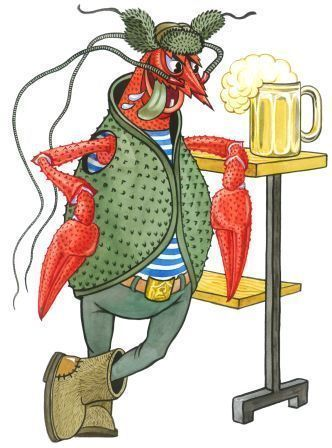
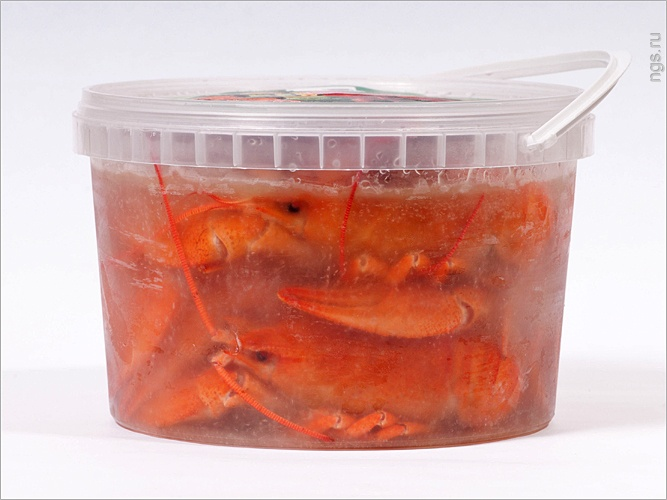

Как хранить вареных раков

| 
Если у Вас возникла необходимость ну, например куда-то перевести уже
свареных раков или раки сварены, но их нужно долго хранить, короче когда
возникает вопрос: как хранить вареных раков, делаем следующее. Варим
раков по классическому рецепту ,
но соли добавляем больше, на половину столовой ложки. Доводим
кастрюлю с раками до кипения и варим 1-2 минуты. После чего вынимаем
раков в какую-нибудь ёмкость, если храним в тойже кастрюле, что и варим,
то просто даём остыть и убираем в холодильник. Если
есть необходимость транспортировки, то перекладываем раков в
герметичную ёмкость. Перекладываем раков вместе с укропом с которым они
варились и заливаем сверху рассолом, плотно закрываем крышку и
готово. 
Вареных раков довезли, теперь всё содержимое перекладываем в
кастрюлю , вместе с укропом, выливаем рассол и доводим до кипения,
даём покипеть 5 минут, и всё раки готовы. Всё то же самое
делаем, если раки просто хранились в рассоле в холодильнике. |
Источник : http://www.boooooo.org/publ/spravochnik_po_rakam/prigotovlenie_rakov/kak_khranit_varenykh_rakov/30-1-0-594